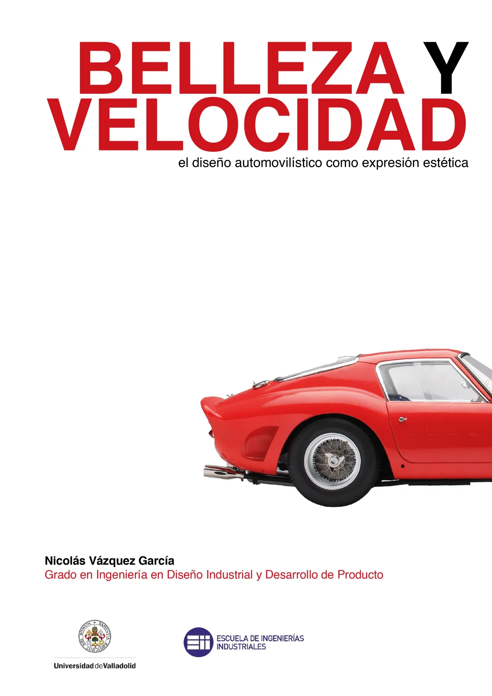
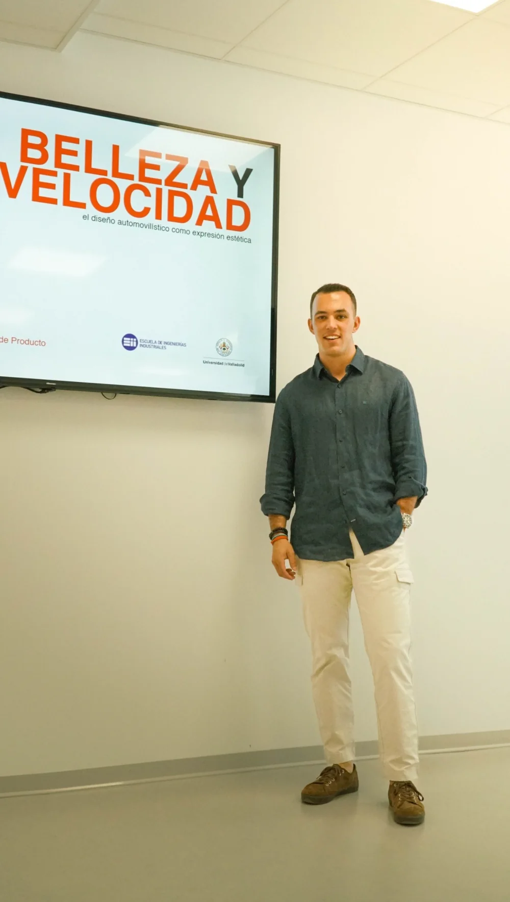
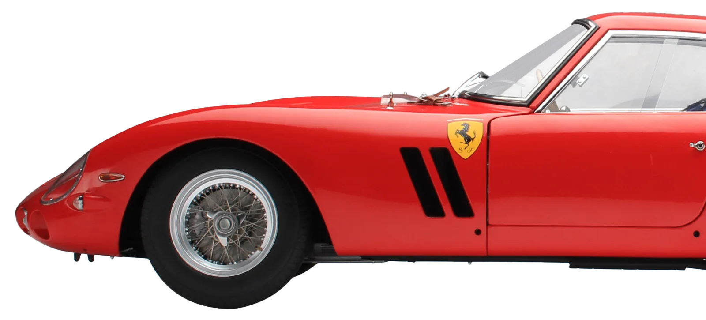
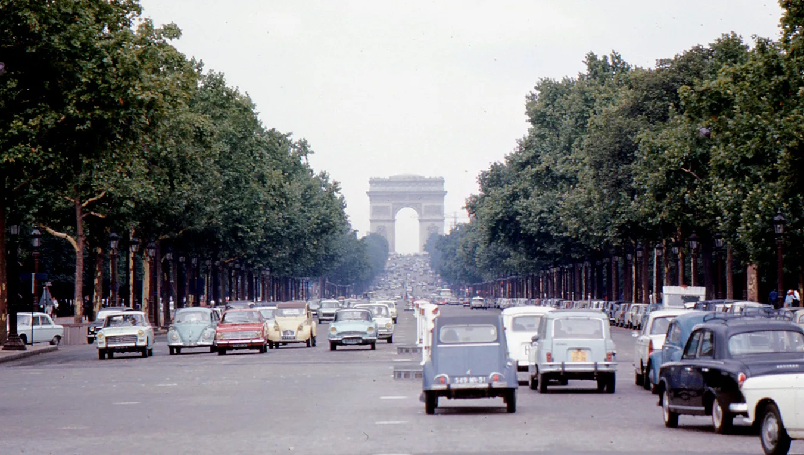
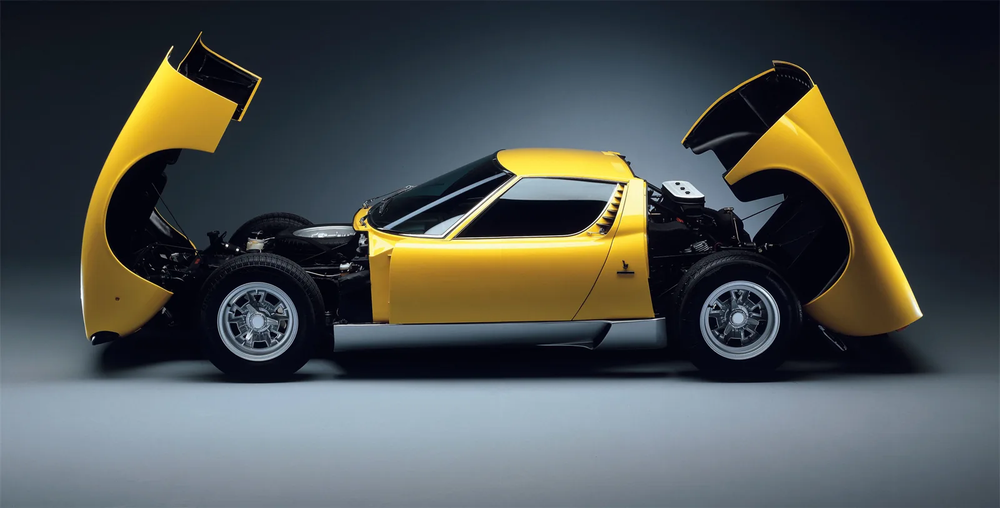

Trabajo Fin de Grado · Ingeniería en Diseño Industrial y Desarrollo de Producto · Universidad de Valladolid
Belleza y velocidadel diseño automovilístico como expresión estética
La belleza automotriz no es un adorno, sino el resultado directo de resolver retos físicos y mecánicos: la estética es la consecuencia de una ingeniería brillante.
Publicación en curso — esto es solo un adelanto del proyecto completo.


De medio de transporte a icono cultural.
Un recorrido por los coches del pueblo, las leyendas de los años 60 y el impacto del diseño automotriz en la relojería, accesorios y la arquitectura.
La belleza no es un añadido: es la consecuencia de una ingeniería brillante.

Los tres bloques

Bloque 01Coches del pueblo
Cómo Beetle, 2CV, Fiat 500 y Mini demostraron que la escasez es compatible con la excelencia. Ver bloque →
Bloque 02Iconos de la velocidad. La década de 1960
Cómo la década de 1960 esculpió tres iconos de la velocidad: Jaguar E-Type, Ferrari 250 GTO y Lamborghini Miura. Ver bloque → Bloque 03
Bloque 03